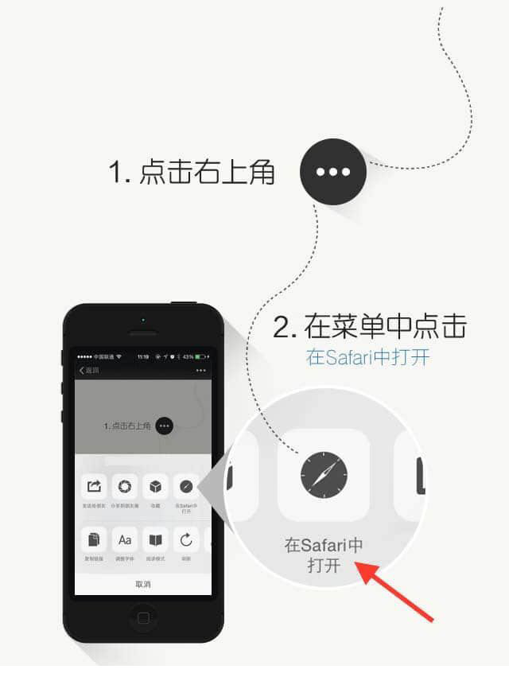

<html>
    <head>
        <meta http-equiv="Content-Type" content="text/html; charset=utf-8" />
		<meta http-equiv="X-UA-Compatible" content="IE=edge">
		<meta name="description" content="">
		<meta name="keywords" content="">
		<meta name="viewport" content="width=device-width, initial-scale=1, maximum-scale=1, user-scalable=no">
        <title>APP名称</title>   
 
        <script type="text/javascript">
            var is_weixin = (function() {
                var ua = navigator.userAgent.toLowerCase();
                if (ua.match(/MicroMessenger/i) == "micromessenger") {
                    return true;
                } else {
                    return false;
                }
            })();
            /*
             * 智能机浏览器版本信息:
             *
             */
            var browser = {
                versions: function() {
                    var u = navigator.userAgent, app = navigator.appVersion;
                    return {//移动终端浏览器版本信息
                        trident: u.indexOf('Trident') > -1, //IE内核
                        presto: u.indexOf('Presto') > -1, //opera内核
                        webKit: u.indexOf('AppleWebKit') > -1, //苹果、谷歌内核
                        gecko: u.indexOf('Gecko') > -1 && u.indexOf('KHTML') == -1, //火狐内核
                        mobile: !!u.match(/AppleWebKit.*Mobile.*/) || !!u.match(/AppleWebKit/), //是否为移动终端
                        ios: !!u.match(/\(i[^;]+;( U;)? CPU.+Mac OS X/), //ios终端
                        android: u.indexOf('Android') > -1 || u.indexOf('Linux') > -1, //android终端或者uc浏览器
                        iPhone: u.indexOf('iPhone') > -1 || u.indexOf('Mac') > -1, //是否为iPhone或者QQHD浏览器
                        iPad: u.indexOf('iPad') > -1, //是否iPad
                        webApp: u.indexOf('Safari') == -1 //是否web应该程序，没有头部与底部
                    };
                }(),
                language: (navigator.browserLanguage || navigator.language).toLowerCase()
            }
 
            if (browser.versions.ios || browser.versions.iPhone || browser.versions.iPad) {
                if (is_weixin) {
                    var width = window.innerWidth || document.documentElement.clientWidth || document.body.clientWidth;
                    var height = window.innerHeight || document.documentElement.clientHeight || document.body.clientHeight;
                    document.write('</img>');
                }else {
                    window.location = "https://itunes.apple.com/app/idAPPID";
                }
            }
            else if (browser.versions.android) {
                if (is_weixin) {
			//兼容微信
			window.location = "APP应用宝地址";
		}else {
			window.location = "服务器apk下载地址";
		}
            }
 
        </script>
    </head>
    <body>  
    </body>
</html>
